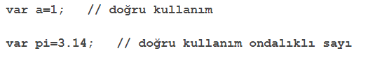
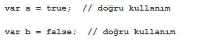

5) JAVASCRİPT VERİ TİPLERİ
İnsanlardan farklı olarak bilgisayarlar, 1234 ve abcd arasındaki farkı anlayamazlar. Yani hangisi sayı, hangisi metin bunu ayırt edemezler.
Veri türü, değişkenler içinde saklanacak verinin türüne göre sınıflandırılmasıdır. Veri türleri her programla dili için oldukça önemli bir kavramdır.
Bir uygulama geliştirirken değişken içinde saklanan verinin türünü önceden belirtiriz. Böylece bilgisayar verinin saklanacağı bellek alanını buna göre ayırır.
-String Veri Tipi(Metin)
String veri tipi içerisinde metinsel ifadeleri saklar. String veriler değişkenlere girilirken (“) tırnak işareti ya da (‘) kesme işareti kullanılır.
-Number Veri Tipi(Sayısal)
Numbers veri tipi içerisinde sayısal değerleri tutmak için kullanılır. Değerler tanımlanırken (“) çift tırnak veya (‘) tek tırnak işaretine ihtiyaç yoktur.
Ondalıklı sayı değeri tanımlanırken (.) nokta işareti kullanılır.
-Boolean Veri Tipi(Mantıksal)
Bazı ifadeler sadece iki alternatiflidir. İfade ya doğrudur(true) ya da yanlıştır(false). Bu tip değişkenlere boolean ifadeler ismi verilir. Mantıksal veriler koşul gerektiren ifadeler için kullanılır.
-Array Verisi(Dizi)
Dizi bir veri tipinde birden fazla değer içerir. Dizi oluşturulurken köşeli parantez kullanılır ve değerler (,) ile ayrılır.
-Veri İkilileri (Nesneler)
Nesneler alt değişken verilerini içerisinde tutar. Alt değişkenler sıralanırken kıvrım parantezler kullanılır. Değişkenler virgüllerle ayrılarak yazılır.
-Boş ve Tanımsız Veriler( Undefined & Null )
JavaScript dilinde değer içermeyen değişkenler bulunur. Bu değişkenler veri içermezler. Veri içermeyen değişken oluşturulurken var degişken seklinde oluşturulur. Yani sadece değişken ismi yazılır. (=) eşittir operatörü kullanılmaz.
Bazı durumlarda değişkenin içerisinde bulunan verinin silinmesi gerekir. Bunun için Null ifadesi kullanılır.

-Veri Türünü Tespit Etmek (typeof)
Typeof operatörü kullanılarak bir değişkenin türü sorgulanabilir.
-Değişkenin Veri Türünü Değiştirmek
JavaScript veri türleri yeni değerler atanarak kolayca değiştirilebilir. Aşağıda a değişkeni içerisinde bulunan değer yeni bir değer almıştır.